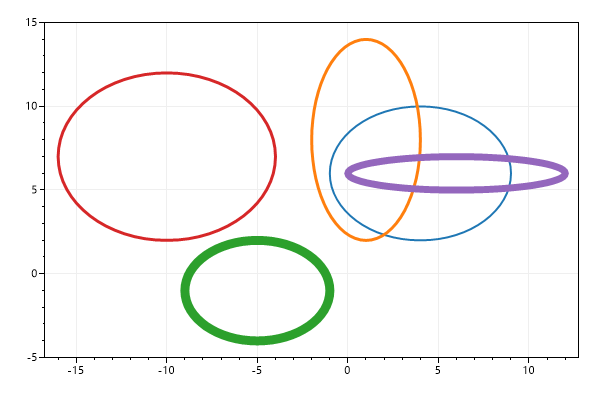
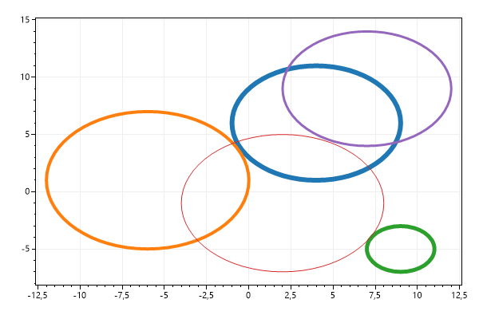
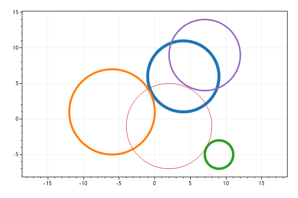
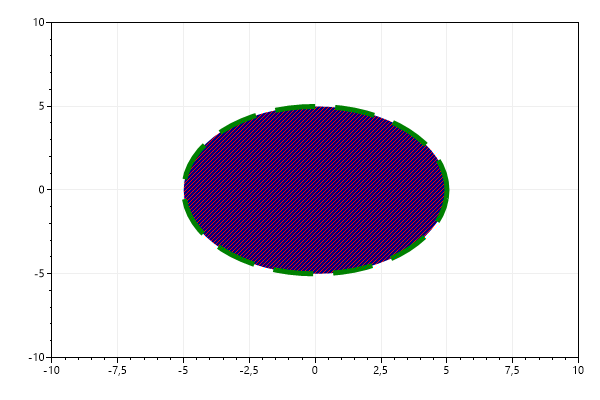

This page contains recipes for the Ellipse category.
Visit the Cookbook Home Page to view all cookbook recipes.
Visit the Cookbook Home Page to view all cookbook recipes.
Ellipse Quickstart
Ellipses can be added to plots
var plt = new ScottPlot.Plot(600, 400);
Random rand = new(0);
for (int i = 0; i < 5; i++)
{
plt.AddEllipse(
x: rand.Next(-10, 10),
y: rand.Next(-10, 10),
xRadius: rand.Next(1, 7),
yRadius: rand.Next(1, 7),
lineWidth: rand.Next(1, 10));
}
plt.SaveFig("ellipse_quickstart.png");

Circle Quickstart
Circles can be added to plots. Circles are really Ellipses with the same X and Y radius. Note that circles appear as ellipses unless the plot has a square coordinate system.
var plt = new ScottPlot.Plot(600, 400);
Random rand = new(0);
for (int i = 0; i < 5; i++)
{
plt.AddCircle(
x: rand.Next(-10, 10),
y: rand.Next(-10, 10),
radius: rand.Next(1, 7),
lineWidth: rand.Next(1, 10));
}
plt.SaveFig("circle_quickstart.png");

Circle with Locked Scale
For circles to always appear circular, the coordinate system must be forced to always display square-shaped pixels. This can be achieved by enabling the axis scale lock.
var plt = new ScottPlot.Plot(600, 400);
Random rand = new(0);
for (int i = 0; i < 5; i++)
{
plt.AddCircle(
x: rand.Next(-10, 10),
y: rand.Next(-10, 10),
radius: rand.Next(1, 7),
lineWidth: rand.Next(1, 10));
}
plt.AxisScaleLock(true); // this forces pixels to have 1:1 scale ratio
plt.SaveFig("circle_square_pixel.png");

Ellipse Styling
Ellipses styles can be extensively customized
var plt = new ScottPlot.Plot(600, 400);
var el = plt.AddCircle(0, 0, 5);
el.BorderLineWidth = 5;
el.BorderLineStyle = LineStyle.Dash;
el.BorderColor = Color.Green;
el.Color = Color.Navy;
el.HatchColor = Color.Red;
el.HatchStyle = Drawing.HatchStyle.StripedUpwardDiagonal;
plt.SetAxisLimits(-10, 10, -10, 10);
plt.SaveFig("ellipse_styling.png");
